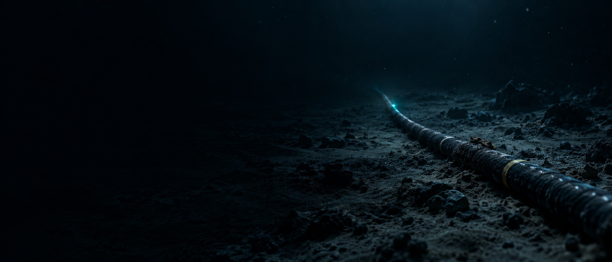
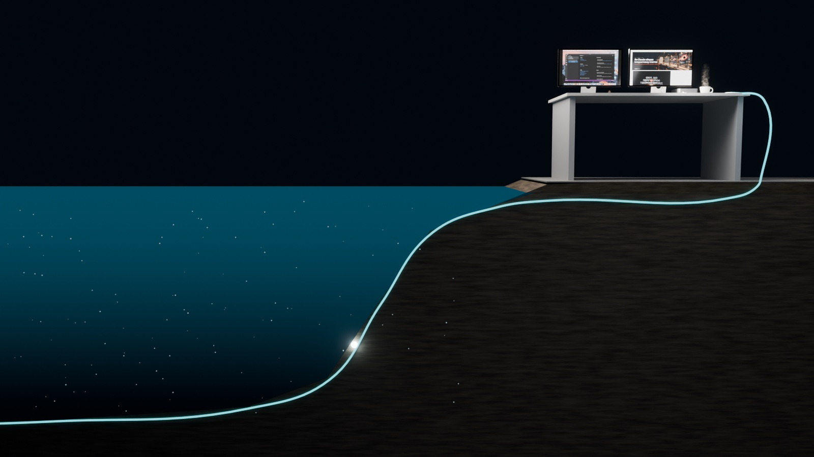

43 мілісекунди
Як за 170 років люди навчилися проводити сигнал дном океану і чому кабель завтовшки з садовий шланг досі рветься
Ви натискаєте «надіслати» в Гданську, і через частку секунди телефон дзвонить у Нью-Йорку. Між ними Балтика, Північне море, Атлантика, понад сотня підсилювачів на дні і 170 років спроб, більшість із яких закінчилися обривом. Пройдімо цей шлях: від кабелю, який передавав слово за десять хвилин, до скла, що несе 160 терабітів на секунду. Позначки: факт — опубліковані дані, дискусія — історики чи інженери сперечаються, спрощення — розрахунок або схема.
00Одна хвилина замість 43 мілісекунд
Спершу вся дорога: імпульс світла йде з Гданська до Нью-Йорка, а ми розтягуємо цей час приблизно в 1400 разів. Він пролітає повз усю історію, що лежить на дні. Потім кожен відрізок можна розібрати руками.
01дискусія1858: кабель, який прожив два місяці
16 серпня 1858 року королева Вікторія надіслала президенту Б’юкенену привітання на 98 слів. Воно йшло близько шістнадцяти годин, тобто приблизно хвилин по десять на слово. Кораблем було б днів десять, тож Нью-Йорк влаштував феєрверк, від якого загорілася мерія. Але вже 20 жовтня лінія замовкла: за весь час вона передала 732 телеграми.
Чому так повільно? Довгий кабель у воді працює як величезний конденсатор: імпульс не проходить, а просочується, розпливаючись дорогою. Вільям Томсон, майбутній лорд Кельвін, ще 1854 року вивів закон квадратів: удесятеро довший кабель — у сто разів більша затримка. 200 миль — десята частка секунди, 2000 миль — десять секунд. Пересуньте довжину, а потім спробуйте два способи вести передачу.
Не плутати. Вайтгауса часто роблять єдиним винуватцем. Але кабель пошкодили ще під час виготовлення й зберігання, а вихід у шторм 1858 року додав своє. Високий вольтаж, імовірно, лише добив слабке місце. Причину дослідники обговорюють досі.
02факт1866: кабель, піднятий із дна
Перший армований кабель перетнув Ла-Манш ще 1851 року, після того як незахищений попередник 1850-го вийшов із ладу майже одразу. Перетнути протоку і перетнути океан, однак, задачі різні. Сайрус Філд, нью-йоркський паперовий торговець, збирав гроші й людей дванадцять років. На Атлантику вийшли чотири експедиції, і всі вони закінчилися по-різному.
Корабель, що вмістив океанський кабель
Жоден звичайний корабель не брав весь кабель одразу, через що 1857–58 років його доводилося стикувати посеред океану. «Грейт Істерн» Брюнеля, 211 метрів завдовжки, довго вважався невдалим проєктом: пасажирів на нього бракувало. Для кабелю він підійшов ідеально: 1866 року вийшов із 2730 морськими милями в трюмах. Покрутіть модель і уявіть три величезні баки кабелю всередині корпусу.
Шість щогл, пʼять труб, гребні колеса й гвинт: для 1860 року це був велетень. Модель ілюстративна, не креслення.
Цікавий факт. Кінець кабелю 1865 року виловили гаком із глибини кілька кілометрів, після численних невдалих закидань. Так з’ясувалося, що обрив на дні можна виправити. Відтоді кабельний ремонт — звичайна робота.
03факт1956: голос потребує підсилювачів
Телеграф через океан жив майже сто років, а голос туди не проходив: телефонний сигнал занадто швидкий, він гасне в кабелі за кілька десятків кілометрів. Рішення було одне: поставити на дно підсилювачі на лампах, які працюватимуть під тиском кілька кілометрів води роками й без доступу. 25 вересня 1956 року запрацював TAT-1 між Шотландією та Ньюфаундлендом: 51 підсилювач і 36 каналів, із яких один віддали під телеграф.
Перевірте, скільки підсилювачів потрібно, щоб сигнал не потонув у шумі.
Не плутати. 36 каналів — це не 36 дротів, а 36 розмов, розведених за частотами в одному кабелі. І це вся Атлантика: тридцять шість людей одночасно.
04факт1988: мідь міняють на скло
Світло не потребує мідного провідника, йому треба лише не вийти зі скла. Тут працює те саме повне внутрішнє відбиття, що й у краплі води: якщо промінь торкається межі двох шарів майже паралельно, він відбивається цілком. Серцевина волокна лише трохи оптично густіша за оболонку, тож коридор кутів вузький. Змініть кут і знайдіть межу.
14 грудня 1988 року TAT-8 з’єднав США, Британію й Францію: близько 5800 км, 280 Мбіт/с, 40 000 телефонних каналів, більше ніж у тисячу разів порівняно з TAT-1. Частина цієї ємності пішла на те, чим не займався раніше жоден кабель через океан: на ранній інтернет. Сам TAT-8 зламався 2002 року, його вирішили не лагодити.
Що всередині кабелю
Ось чому тонкий кабель витримує океан. Глибоководний завтовшки 17–20 мм, близько садового шланга. Товстіший він лише біля берега. Посуньте повзунок, щоб розвести шари, або клікніть шар.
05спрощенняКольори: більше не значить швидше
Від 1990-х ємність волокна почала рости без нового скла. Спершу ербієві підсилювачі: шматок волокна з домішками, що підсилює світло, не перетворюючи його на електрику. Потім WDM: кілька довжин хвиль в одному волокні, кожна зі своїми даними. Додайте кольорів і пар волокон і порівняйте результат зі справжніми кабелями.
Важливо. Пропускна здатність і затримка — різні речі. Кольорів можна додати скільки завгодно, і кожен імпульс усе одно летітиме з тією самою швидкістю. Широка дорога не робить автомобіль швидшим. Ємність визначають інженери, а затримку — фізика скла й довжина маршруту.
06фактТаймлапс: 1850 → 2026
Усе разом на одній карті: море й суходіл. Спершу телеграф тягнеться окремими лініями, а потім, після 1988 року, морська мережа вибухає. Запустіть, зупиніть на будь-якому році, клікніть кабель. Сьогодні це понад 1,5 млн км під водою: ITU оцінює, що кабелі несуть близько 99 % міжнародного інтернет-трафіку.
Не плутати. 99 % — це не частка всіх ваших даних. Більшість трафіку не виходить за межі країни й до кабелю взагалі не доходить. Це частка саме міжнародного обміну: супутники несуть решту.
07фактДно: як кабелі відкрили підводну лавину
18 листопада 1929 року о 20:32 за Гринвічем на південь від Ньюфаундленду стався землетрус магнітудою 7,2. Кабелі на схилі порвалися майже одразу. А потім почалося дивне: упродовж 13 годин 17 хвилин обрив ішов за обривом, щоразу глибше й далі на південь, на понад 300 миль. Автомати записали час кожного обриву до хвилини. Двадцять три роки ніхто не міг цього пояснити.
Прокрутіть ту ніч, обрив за обривом.
Кабель рветься щотижня
Сьогодні аварій 150–200 на рік, і 70–80 % із них — рибальські знаряддя й якорі. Лава, зсуви й течії — менша частина, але найгучніша. 2022 року Тонга лишилася без зв’язку на п’ять тижнів. У лютому 2024-го затонулий у Червоному морі Rubymar якорем порвав кілька кабелів; у вересні 2025-го нові обриви там зачепили близько 25 % трафіку між Азією, Європою й Близьким Сходом. На Балтиці кабелі рвалися в листопаді й грудні 2024 року та в грудні 2025-го; причини з’ясовують і досі про них сперечаються, тож без доказів тут ніхто не може говорити певно. Порвіть кабель самі: на Атлантиці й на Тонзі.
Висновок. Обрив кабелю — звична подія. Біда починається там, де запасного кабелю немає, бо мережа не однаково густа: там, де є один кабель, один якір відрізає цілу країну.
08спрощенняВаш клік: Гданськ → Нью-Йорк
Тепер весь маршрут. З Гданська сигнал іде суходолом і дном Балтики до данського узбережжя, де виходить у море, наприклад, Havfrue. Цю систему запустили 2020 року, і її власники — Google, Facebook, Aqua Comms, Bulk: четверо, серед яких двоє не телекоми. Далі Північне море, Атлантика, берег у Воллі в Нью-Джерсі, і нарешті Мангеттен. Натисніть і дивіться лічильник.
Розрахунок такий: близько 8700 км скла при 204 000 км/с дають 42,6 мс в один бік і понад 85 туди й назад. Перевірити можна: оператор Havfrue вказує 72,5 мс у дві сторони лише на відрізку Волл — Есб’єрг. Тобто 36 мс в один бік, а це за нашою швидкістю близько 7400 км, якраз у межах довжин, які наводять для цього кабелю (7200–7851 км). Реальний пінг буде більшим: маршрути не прямі, обладнання теж забирає час.
Світло у вакуумі по прямій дузі (6601 км) встигло б за 22 мс. Половину часу з’їдає саме скло й обхідний шлях, а не підсилювачі чи техніка. Тому банкіри й біржі платять за короткі траси.
Цікавий факт. Хто платить, той і прокладає. На початку 2010-х на чотири найбільші технологічні компанії припадало близько 10 % використаної міжнародної ємності, а 2022-го, за даними TeleGeography, уже 71 %. Кабель перестав бути спільною справою телекомів.
Диск чи кабель?
А коли даних справді багато, їх досі возять літаком. Google продає Transfer Appliance на 100 або 480 ТБ: каже, що 500 ТБ при 1 Гбіт/с — це 58 днів. Телескоп горизонту подій 2017 року записав близько 5 ПБ, півтонни дисків. З полюса вони вирушили лише в грудні: узимку туди не літають. Звідси приказка інженерів: найширший канал — літак із дисками. Історію про те, як саме Google між континентами возив жорсткі диски через нестачу волокна, підтвердити не вдалося, тому не наводимо. Порахуйте свій випадок.
09Карта: від чого залежить ваш клік
Усе разом. Наведіть на блок або запустіть маршрут.

10А ще…
- Жуль Верн плив на «Грейт Істерн» 1867 року і написав про нього роман «Плавуче місто», згадавши там і кабель.
- Акули винні рідше, ніж у мемах. Укуси риб — 0,5 % аварій за 1959–2006 роки, а за 2007–2014 ICPC не зафіксував жодної через акул.
- Договору про захист кабелів 142 роки. Паризька конвенція 1884-го чинна досі, її учасники — 36 держав.
- Телеграф ішов повз Гданськ. Індоєвропейська лінія 1870 року тягнулася через Торунь і Варшаву, а від Лондона до Калькутти повідомлення йшло 28 хвилин.
- Кабель чує китів. Волокно біля Шпіцбергена використали як тисячі датчиків і почули китів, кораблі й землетруси. TAT-8 тим часом частинами підіймають із дна: він своє відпрацював.
Відкриті питання
- Хто відповідає, якщо кабель порвав якір у нейтральних водах? Договори старі, а судити може лише держава прапора.шукати: UNCLOS article 113 submarine cable, flag state jurisdiction
- Чи повезе наступний стрибок порожнисте волокно, де світло йде повітрям і майже на третину швидше?шукати: hollow-core fiber latency transatlantic
- Що означає для мережі те, що кабелі тепер належать кільком компаніям, які водночас продають хмару?шукати: hyperscalers subsea cable ownership share, TeleGeography
11Що відомо
- 1858 рік дав лише кілька тижнів зв’язку; стійка лінія через Атлантику — від 1866-го.
- Закон квадратів описує затримку в кабелі-конденсаторі; високий вольтаж лише один із чинників загибелі кабелю 1858 року.
- TAT-1 (1956) — 36 каналів; TAT-8 (1988) — 280 Мбіт/с; сучасні системи — понад 100 Тбіт/с.
- Близько 42,6 мс Гданськ — Нью-Йорк — розрахунок за фізикою для одного з можливих шляхів, не вимір.
- Обриви 1929 року дали перший вимір швидкості турбідитного потоку.
- Відкрите питання: причини обривів на Балтиці 2024–2025 років остаточно не встановлені.
Джерела
- History of the Atlantic Cable & Undersea Communications (B. Glover) — 1851, 1857–66, TAT-1, Індоєвропейська лінія
- Indo-European Telegraph Company — маршрут через Торунь і Варшаву, 1870
- PBS American Experience — повідомлення королеви, швидкість
- ETHW — Transatlantic Optical Cable, TAT-8
- IEEE ComSoc — First Optical Transatlantic Cable TAT-8
- TelcoNews — TAT-8: вартість, вивід 2002, підйом із дна
- Heezen & Ewing, Am. J. Sci., 1952 — таблиця обривів 1929, рис. 3, швидкості
- Geophysical Journal International, 2025 — 12 кабелів, 28 місць обриву, зсув 1929
- TeleGeography Submarine Cable Map — траси, роки, понад 1,5 млн км (знімок 31.10.2026)
- TeleGeography FAQ — товщина кабелю, підсилювачі кожні 60–80 км
- ITU — близько 99 %, понад 170 ремонтів 2025 року (ICPC)
- ICPC — 150–200 аварій на рік, риболовля і якорі
- Lightwave — ICPC про акул і кабелі
- Bulk Infrastructure — Havfrue, 72,5 мс Волл — Есб’єрг
- Data Center Frontier — Havfrue у Воллі, власники
- NOAA — Паризька конвенція 1884, 36 учасників
- Жуль Верн, «Плавуче місто» (Project Gutenberg)
- Scientific Reports, 2022 — волокно Шпіцбергена як датчик
- Google Cloud — час передавання великих наборів, Transfer Appliance
- Inverse — Телескоп горизонту подій, диски літаком
- Internet Society Pulse, 2024 — частка гіперскейлерів, 10 % → 71 %
- IndustryWeek — Транс-Азія — Європа, 27 000 км
- Datapro, 1989 — перша оптична мережа США, 20 000 миль траси
Числа на сцені = числа в тексті = числа в джерелах (знімок на 31.10.2026, shared/oc-data.js). Траси сучасних кабелів спрощено; повна карта в TeleGeography. Карта наземних ліній GeoDataViewer розглядалася й відкинута: у ній лінії йдуть через океан. Сцени, переріз кабелю й ролик намальовано кодом; корабель — 3D-модель (Tripo), кадр зі столом — рендер у Blender. Текст відредаговано з допомогою Gemini, факти звірено.